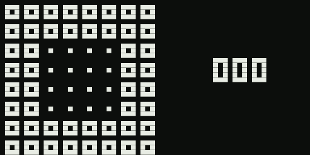
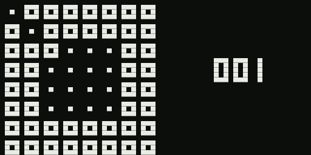
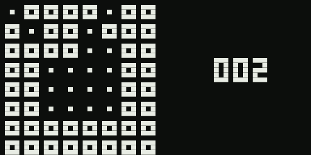

One Check
Graeme V. Samways · DREAMER no. 2 (1980-10) p. 12 1K RAM



A solitaire on an 8x8 board with 48 checkers on the two outer rings, adapted from a BASIC program by David Ahl. You remove checkers by diagonal jumps and the score is the number removed: 30-39 is easy, 40-44 a challenge and 45-47 a real feat.
Keys
Key X (0-7) then Y (0-7) to pick a checker, then 4 up-left, 6 up-right, C down-left, E down-right to jump; any other key cancels.
Files
| File | Version | Load | Run |
|---|---|---|---|
| One Check.c8 | main | 0200-035F | C000 |
Listing as transcribed (with notes): one_check.txt
Source
DREAMER no. 2 on archive.org, p. 12 (PDF page 12). Author: Graeme V. Samways.
Corrections applied
- 02F8 4D04 -> 4B04 (up-left edge test must use VB like the other three directions; 4D04 wrongly refused an up-left jump from row 2 to row 0).
- 024A, 025C, 0270 covered by a reader's hand-written calls to his own routines; reconstructed as FC0A, FD0A, F80A from those routines and the surrounding code.
Open doubts
- 0304 is a hand-retouched digit, read as 3806.